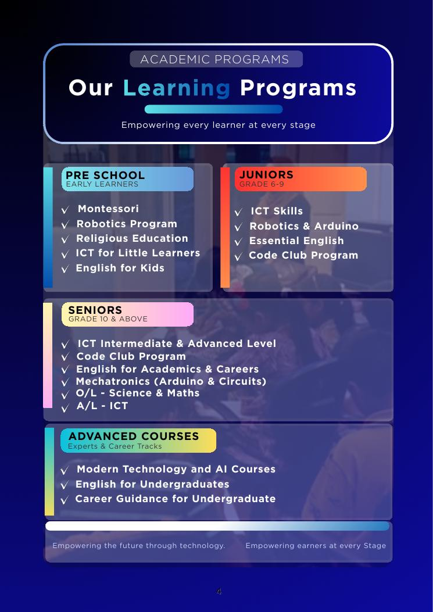
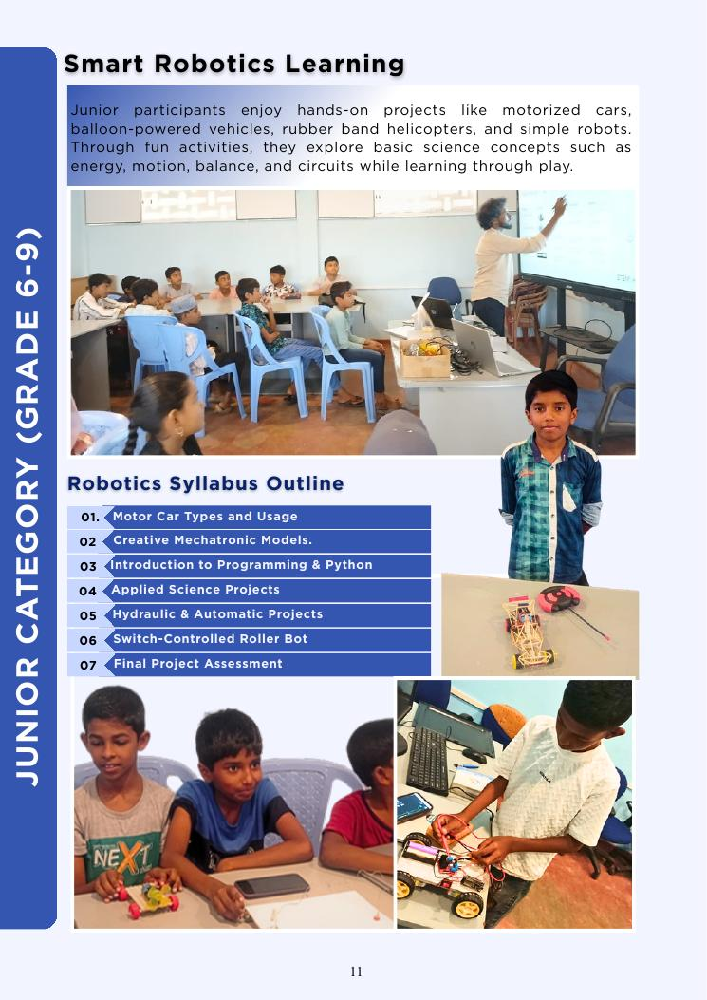
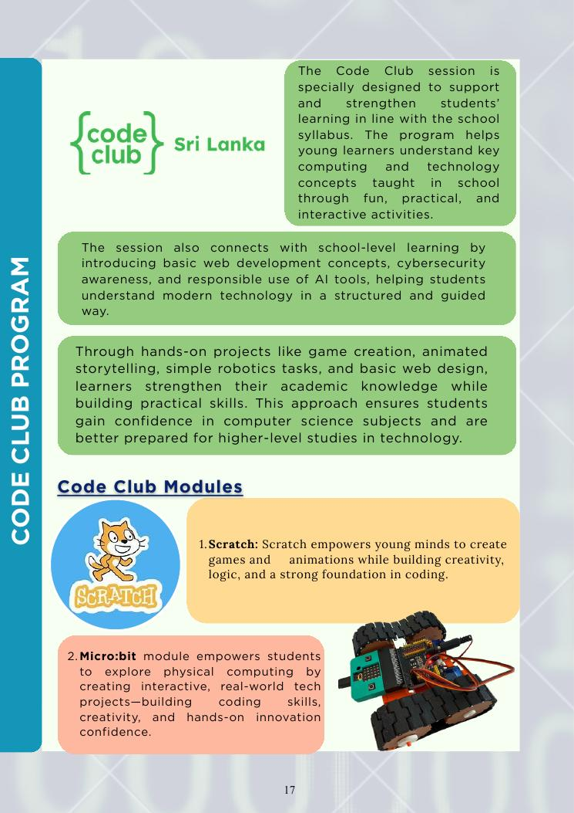
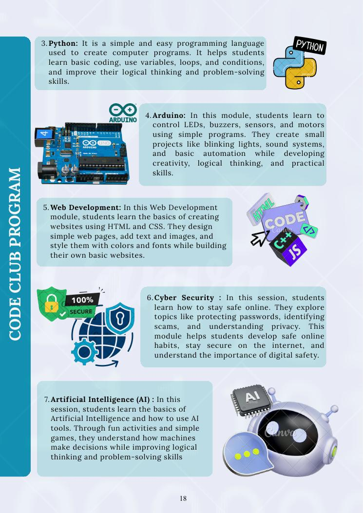
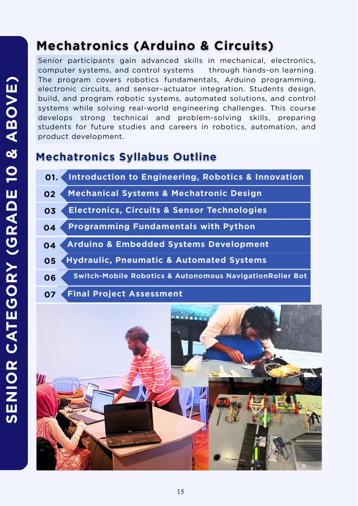
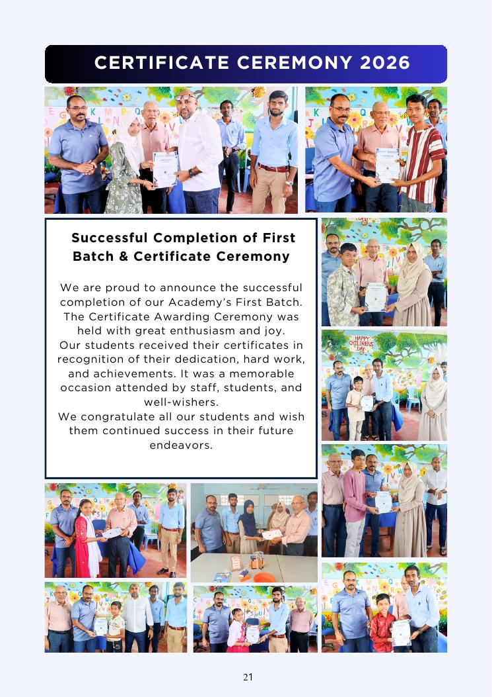
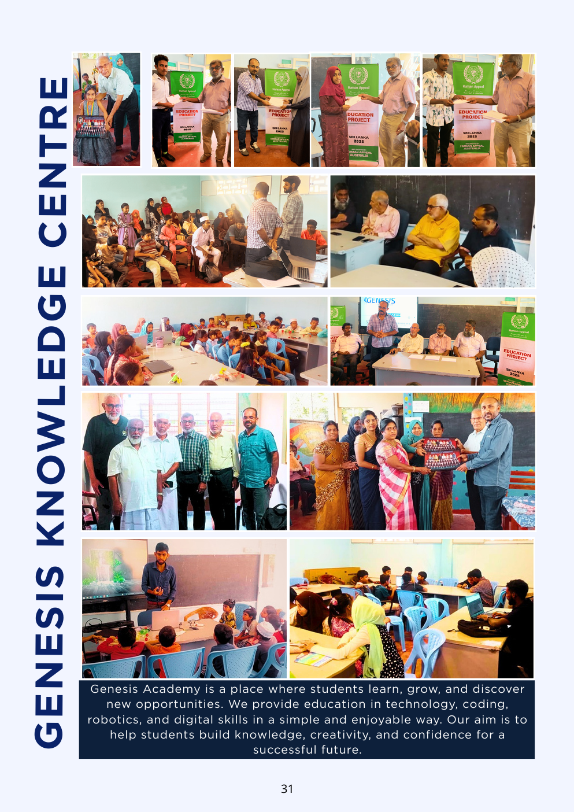

Preschool
Montessori
Hands-on exploration and guided discovery that build confidence, independence and a love for learning.
Empowering every learner at every stage through technology, creativity, communication and practical skills.

Hands-on exploration and guided discovery that build confidence, independence and a love for learning.
Stories, modern learning materials and language activities to build reading, comprehension and pronunciation.

Play-based activities where children build, move and explore simple models while developing curiosity and teamwork.
Child-friendly learning in Qur’an recitation, daily Du’as, prayers, Islamic manners and introductory Arabic.
Fun and safe introduction to computers, mouse and keyboard skills, digital drawing and responsible tech habits.
Computing, digital citizenship, programming, networking, websites, databases, AI awareness and project work.
Motorized cars, creative mechatronic models, programming, applied science and robotics projects.

Reading, writing, grammar, vocabulary, pronunciation and conversation skills for confident daily communication.

Scratch, Python, Arduino, web development, cybersecurity and AI through fun, practical activities.
Programming, software development, networking, web development, databases, AI, SDLC and multimedia.

Mechanical systems, electronics, sensors, Arduino, robotics, automation and control systems.
Academic and professional communication, reading, writing, speaking, presenting and workplace communication.
Syllabus-based lessons, step-by-step explanations, revision and practice for G.C.E. O/L preparation.
Academic writing, presentations, communication, grammar and professional language for university and work.

Support for choosing career paths, understanding skills and opportunities, setting goals and preparing confidently.

Artificial intelligence, robotics, n8n automation, Salesforce and cloud platforms including AWS, Azure and Google Cloud.
Have a question about a course or learning stage? Contact Genesis Academy.
Contact Us →